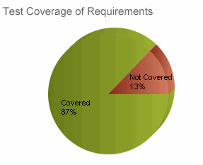

| Test Coverage of Requirements |
 |
|
| Связанные элементы |
|---|
PurposeThis metric exposes requirements that do not have test cases. The ultimate goal of this metric is to ensure that all requirements can be validated and that they work as intended. Definition
AnalysisSoftware that implements requirements with inadequate test coverage may not work as intended or may have defects. The team should expect 100% coverage of requirements. Verification of coverage requires traceability between requirements and test artifacts.
With some exceptional cases, such as a requirement that can be satisfied by demonstration, a requirement might not need
a corresponding test case, but could be verified by other verification method. In this case, the team should make sure
that all requirements are verified by checking at the Verification matrix report.  Frequency and reportingMonitor Test Coverage of Requirements each iteration. For iterative development, Test Coverage of Requirements should be close to 100% for requirements planned for that iteration. Collection and reporting toolsTest to Requirements traceability information can be obtained from a Requirements Traceability Matrix. Tools like IBM® Rational® DOORS®, IBM® Rational® Requirements Composer®, IBM® Rational® Requisite Pro®, and IBM® Rational® Team Concert® can be used to collect the data. IBM® Rational® Quality Manager® provides a Requirements Not Covered by Test report.
IBM® Rational® Insight® provides full support for reporting the data. Pitfalls, advice, and countermeasures
|
Licensed Materials - Property of IBM |